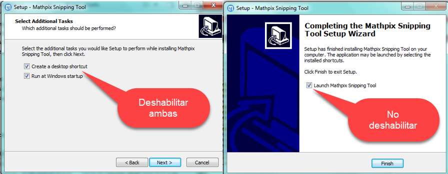

INSTALACIÓN Y CONFIGURACIÓN DE LATEX BAJO WINDOWS
1. Eliminando archivos temporales2. Software Libre (open source) necesario:3. Links para descarga e instalación 4. Proceso de instalación4.1. Instalar MiKTeX4.2. Actualizar Miktex4.3. Instalar TeXstudio4.3.1. Configurar Visor Externo4.3.2. Configurar idioma español4.4. Un primer archivo LATEX4.5. Instalar Mathpix
1. Eliminando archivos temporales
Un archivo temporal es aquel que puede ser creado por el software con el fin de contener información de forma transitoria durante el tiempo que nos encontramos creando un archivo estándar, y luego de que cerramos el programa que estábamos utilizando, de manera automática el archivo temporal debería borrarse.
Estos archivos temporales son utilizados con el propósito de recuperar datos que puedan llegar a perderse en el caso de que el programa o la PC se llegaran a detener de manera anormal y sorpresiva. A pesar de ser transitorios, en ocasiones el sistema no los elimina, por lo que deberíamos recurrir a hacerlo manualmente. Este tipo de archivos pueden generar un perjuicio para el rendimiento de la PC.
Así, es conveniente eliminar manualmente (o configurar algún software que lo haga automáticamente) archivos que se encuentran localizados en dos carpetas.
- Acción:
Windows +R despliega la ventana ejecutar, escribir: %temp%, pulsar Enter y se despliega la carpeta Temp, y se procede a eliminar los archivos y (carpetas) que contiene. Al final de este proceso mostrará un mensaje

- Acción:
Windows +R despliega la ventana ejecutar, escribir : temp, pulsarEnter y se despliega la carpeta Temp ubicada en la carpeta Windows. Se repite el proceso anterior. - Hay una carpeta: prefetch con temporales ubicada en (C:\WINDOWS\Prefetch)1. El programa Windows, al encender el equipo, analizará durante 10 segundos a cuales archivos el programa accede y los anota en un archivo en la carpeta prefetch. El resultado: un inicio más rápido de los programas. Por eso se recomienda no suprimir el contenido de esta carpeta puesto que sólo reducirá los rendimientos de Windows.
2. Software Libre (open source) necesario:
Sumatra Visor de documentos pdf, ePub, MOBI, CHM, XPS, DjVu entre otros. Se ha elegido como visor externo para el programa TeXstudio.
MiKTeX Aplicación informática, incluye más de 800 paquetes con tipografías, macros, etc para usarlos en los editores de texto compatibles.
TeXstudio Editor de LATEX, para la escritura de textos científicos.
Open office Facilita la configuración del idioma español en TeXstudio.
Mathpix Herramienta adicional, para capturar ecuaciones y gráficas.
Jabref gestor de referencias bibliográficas de código abierto que permite importar, editar, organizar y exportar referencias en formato BibTeX, por lo que es especialmente útil para usuarios de LaTeX.
A continuación la respectiva dirección para descarga del software y la instalación en cada programa. Es importante seguir las indicaciones que se irán dando en cada numeral.
Nota 1: Antes de iniciar la descarga el usuario debe identificar si el sistema operativo es a 32 o 64 bits. Para ello, un recorrido es: Panel de control → Sistema y seguridad → Sistema.
3. Links para descarga e instalación
- Sumatra pdf
- MiKTeX
- TeXstudio
- Open office (Instalación completa y paquete de idioma)
y el paquete de idioma
- Mathpix
- Jabref
4. Proceso de instalación
En esta sección no se incluye el paso a paso para instalación de Sumatra y JabRef pues ese proceso es muy intuitivo.
4.1. Instalar MiKTeX
MiKTeX (pronunciado mick-tech) es una implementación actualizada de TeX/LaTeX y programas relacionados 2.
TeX es un sistema de composición tipográfica escrito por Donald Ervin Knuth, quien dice que está destinado a la creación de libros hermosos, y especialmente a los libros que contienen muchas matemáticas.
Con el fin de permitir que MiKTeX actualice de forma automática los paquetes o archivos se recomienda para su buen funcionamiento seguir estas indicaciones.
Al iniciar la instalación cuando aparezca la imagen de la izquierda se debe habilitar la opción Aceptar las condiciones de MiKTeK, y en la imagen de la derecha se sugiere el acceso para todos los usuarios.
Posteriormente continuar el proceso aceptando hasta la aparición de la ventana:

donde, debe elegir lo que se está indicando:
Esta última decisión permite además que el compilar en Rstudio se genere el archivo pdf.
4.2. Actualizar Miktex
Es habitual que en algunas ocasiones al compilar el archivo que se está elaborando en TeXstudio, éste no encuentre un paquete para generar el pdf. Es precisamente cuando se debe acudir a la consola de MiKTeX para resolver esa necesidad.
Para su acceso ir a botón de inicio en windows, buscar Miktex Console, y en la ventana que aparece elegir la primera opción:

Aparecerá una nueva ventana con la opción check for updates, que al activarla generará en la parte superior izquierda la leyenda Updates(#) informando cuántas actualizaciones hay pendientes. Se pulsa ese botón y luego el de Update now:

Una vez finalice el proceso se cierra la Consola de Miktex.
Nota 2: Si el programa Miktex no permite este proceso inmediatamente, se recomienda apagar el equipo para volver a activar la consola de Miktex.
4.3. Instalar TeXstudio
Una vez se ha realizado la descarga en la página señalada en el numeral 3: Links para descarga e instalación, ejecutar el archivo .exe y el proceso se reduce a pulsar la opción Aceptar en cada ventana y tendrá un aspecto como:
4.3.1. Configurar Visor Externo
En este proceso se debe conocer la ruta o path donde está ubicada la carpeta del programa Sumatra previamente instalado. Por ejemplo:
Ahora cuando finaliza la instalación de TeXstudio y se ejecuta, por defecto toma del computador un lector de pdf (por ejemplo Adobe Reader) ya existente en el equipo. A continuación se presenta el proceso para configurar a Sumatra como visor externo, para ello ir al menú emergente, en opciones, seleccionar configurar TeXstudio:
Enseguida continuar con los pasos indicados, para el tercero de ellos se busca la ruta donde quedó instalado Sumatra y se selecciona el archivo ejecutable:
Nota 3: La ventana de elegir Sumatra como visor externo es que una vez se compile y visualice el archivo, al acceder al visor externo, este puede mantenerse abierto y continuar el proceso de compilación, sin que haya conflicto alguno. Por supuesto esto se comprenderá en su momento.
4.3.2. Configurar idioma español
Así como se mencionó tener presente la ruta para Sumatra también debe identificar las rutas para TeXstudio y para Open Office. Nuevamente ingresando a la ventana de configuración de TeXstudio ir al menú Comprobación de Lenguaje y establezca la ruta que se ilustra en los pasos 2 y 4 de la siguiente imagen. Para el paso 3 seleccionar el archivo es_ES. Luego de esta imagen se muestra en la siguiente la ruta para completar el paso 4. Para que el programa tome los cambios hacer clic en Aceptar.
Para acción 4 anterior, seguir los siguientes pasos
4.4. Un primer archivo LATEX
El documento tiene dos cosas llamativas3: los comandos que "van" entre "corchetes" enseguida de \begin y un \end y el contenido entre ellos es el entorno.
Un entorno superimportante es el entorno document, ahí dentro irá el contenido de nuestro documento. Todo lo que va entre la definición de documento (\documentclass) y el inicio del entorno document se conoce como preámbulo y es donde se cargan paquetes (\usepackage), se definen comandos y se establecen opciones.
Con el programa TeXstudio, en la herramienta Asistentes, se encuentra la opción que permite crear una plantilla básica para un primer archivo:
Enseguida se despliega un menú que contiene los elementos básicos de un preámbulo. Para el manejo de expresiones matemáticas e imágenes es indispensble aceptar los paquetes AMS y graphicx.

Aparece entonces en la consola de TeXstudio las siguientes líneas, que permiten elaborar un primer archivo. El cuerpo del trabajo a elaborar estará contenido en el entorno o ambiente document:
\documentclass[11pt,letterpaper]{article} \usepackage[latin1]{inputenc} \usepackage[T1]{fontenc} \usepackage{amsmath} \usepackage{amsfonts} \usepackage{amssymb} \usepackage{graphicx} \usepackage[left=3.00cm, right=3.00cm, top=2.50cm, bottom=2.50cm]{geometry} \begin{document} ... ... ``cuerpo del trabajo" ... \end{document}Nota 4: Enseguida es importante grabar el archivo. En este proceso puede elegir la ubicación en su computador y crear la carpeta que contendrá además del archivo .tex, los demás que se generarán como resultado de la compilación.
4.5. Instalar Mathpix
Mathpix es una poderosa herramienta gratuita que permite hacer capturas reconociendo funciones y ecuaciones matemáticas escritas a mano (y por supuesto de páginas de libros).
Después de ingresar al link suministrado en la sección 3, seleccionar el botón Windows para descargar el ejecutable:
Cuando inicie la instalación y encuentre las ventanas que se muestran, realizar lo señalado:

El botón Finish anterior lo lleva al proceso de registro (Sign Up):
Para acceder al programa (Login), éste solicita nuevamente su correo y contraseña:
Cada vez que use Mathpix en cualquier equipo encontrará el historial de las capturas que ha realizado.
Nota 5: Para realizar una captura, primero se activa el programa y, enseguida se emplea la combinación de teclas
Ctrl +Alt +M luego de lo cual se hace el "barrido" del área a capturar.
Al realizar la captura de una fórmula escrita a mano, se observa el resultado en las dos modalidades en la figura 1. La imagen 1(a) muestra la ecuación resultante en la pestaña OCR (Optical Character Recognition) y la imagen 1(b) en la pestaña Original para guardar en formato png.
Entonces, si en la imagen 1(b) hacemos click sobre el rótulo 2 (copy PNG) y ahora vamos a la consola del primer archivo, en la primera línea del cuerpo del trabajo (enseguida de \begin{ document}) y pegamos (
| Figura 2: Pegando imagen |
Luego de Aceptar, el programa despliega un nuevo menú que corresponde a figure (imagen de la derecha), se siguen las observaciones y finaliza con Aceptar.
Vemos en la consola, en el cuerpo del trabajo, el resultado de "pegar" las imagen:

Para que la posición de la imagen al insertarla en el archivo se mantenga donde queremos, la letra H (here), que aparece en paréntesis rectangulares a la derecha de \begin{figure}, es necesario incluír en el preámbulo el paquete \usepackage{float}.
Así el archivo hasta el momento tiene las siguientes líneas:
xxxxxxxxxx \documentclass[11pt,letterpaper]{article} \usepackage[latin1]{inputenc} \usepackage[T1]{fontenc} \usepackage{amsmath} \usepackage{amsfonts} \usepackage{amssymb} \usepackage{graphicx} \usepackage{float} %ubicación de las imágenes \usepackage[left=3.00cm, right=3.00cm, top=2.50cm, bottom=2.50cm]{geometry} \begin{document} \begin{figure}[H] %para mantener la imagen en este lugar \centering \includegraphics{screenshot001} \caption{} \label{fig:screenshot001} \end{figure} \end{document}Volviendo a la imagen 1(a) y haciendo click sobre la línea rotulada con 2 , y pegando esta captura en la penúltima línea del cuerpo del documento, aparece:
xxxxxxxxxx1 \documentclass[11pt,letterpaper]{article}2 \usepackage[latin1]{inputenc}3 \usepackage[T1]{fontenc}4 \usepackage{amsmath}5 \usepackage{amsfonts}6 \usepackage{amssymb}7 \usepackage{graphicx}8 \usepackage{float} %ubicación de las imágenes9 \usepackage[left=3.00cm, right=3.00cm, top=2.50cm, bottom=2.50cm]{geometry}10 \begin{document}11 \begin{figure}[H] %para mantener la imagen en este lugar12 \centering13 \includegraphics{screenshot001}14 \caption{}15 \label{fig:screenshot001}16 \end{figure}17 \begin{equation}S^{2}=\frac{\sum_{i=1}^{n}\left(x_{i}-\bar{x}\right)^{2}}{n-18 1}\end{equation}20 \end{document}y para una mejor observación visual, la linea 17 se puede separar adecuadamente en tres "líneas" para leer:
xxxxxxxxxx1 \documentclass[11pt,letterpaper]{article}2 \usepackage[latin1]{inputenc}3 \usepackage[T1]{fontenc}4 \usepackage{amsmath}5 \usepackage{amsfonts}6 \usepackage{amssymb}7 \usepackage{graphicx}8 \usepackage{float} %ubicación de las imágenes9 \usepackage[left=3.00cm, right=3.00cm, top=2.50cm, bottom=2.50cm]{geometry}10 \begin{document}11 \begin{figure}[H] %para mantener la imagen en este lugar12 \centering13 \includegraphics{screenshot001}14 \caption{}15 \label{fig:screenshot001}16 \end{figure}17 \begin{equation}18 S^{2}=\frac{\sum_{i=1}^{n}\left(x_{i}-\bar{x}\right)^{2}}{n-1}19 \end{equation}20 \end{document}Finalmente al compilar (
| Figura 3: Resultado final |
Accediendo al icono señalado por la flecha (Abrir) se aprecia el contenido de los archivos que se generan en el proceso de compilación:
| Figura 4: Contenido carpeta |